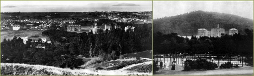

1899–1918 Early Academic Programs and Teaching Hospitals
A Divided Campus: Berkeley and San Francisco
Within twelve months of the near total destruction of the city of San Francisco, the Affiliated Colleges had restored and improved their instructional programs and converted the Parnassus campus into a clinical center. For the first time a full-service dental infirmary, a complete outpatient department, the College of Pharmacy-supervised drugstore, and a functional 75-bed teaching hospital provided service to the community from a centralized location along Parnassus Avenue. The hospital, staffed by graduate nurses and nurses in training, provided services in obstetrics, gynecology, pediatrics, medicine and surgery and was fully ready to “accommodate all of the cases of the kinds that medicine and surgery can benefit.” The next challenge to the newly formed “medical center” came in the form of Flexner’s scrutiny on behalf of national reform in medical education.
To cap San Francisco’s turbulent first decade of the new century, just two years after the makeshift UC hospital had been pressed into service, and the basic sciences removed to the Berkeley campus, Abraham Flexner visited the Medical Department of the University of California as part of his extensive investigation into the conditions of medical education in the United States.
In his report, which was published by the Carnegie Foundation for the Advancement of Teaching the following year, Flexner listed the UC Medical Department among the top sixteen institutions already requiring two years of college work for admission, but he expressed reservations about the odd split between preclinical instruction at UC Berkeley and clinical instruction at San Francisco
UC President Benjamin Ide Wheeler, who had worked tirelessly to reform the Medical Department, began to worry about the abrupt exodus of scientific instruction from Parnassus, complaining that "the Medical School has been cut in twain." As early as 1911, Dean D’Ancona identified the split as a serious mistake, echoing the judgment of the Flexner report that elaborated on the dangers involved in a geographically divided medical curriculum where "busy physicians...[do] not breathe the bracing atmosphere of adjacent laboratories." The Board of Regents took note of this criticism and adopted a report written by a medical faculty's Committee on the University Hospital and Medical Instruction. The 1912 report recommended the consolidation of the medical school in San Francisco at the earliest possible date together with an expansion of the existing facilities on Parnassus. Despite the Regents’ resolve to reconsolidate the medical school, the problem of bridging the gap between basic instruction at Berkeley and clinical instruction at San Francisco would continue to perplex medical school faculty and the UC administration for the next fifty-two years.
Reform of Clinical Instruction: Fulltime Chairmen
In 1910, in his biennial report on the affairs of the University to the governor of California, Wheeler reaffirmed Dean D’Ancona's (and Flexner’s) point of view regarding the need for full-time clinical instructors. He declared that "the needs of education in modern scientific medicine demand that all members of the teaching staff, whether of the first two years or the last two years, shall have a philosophical point of view, a scientific method, academic ideals and enthusiasm in the pursuit of truth. If the teachers are not themselves investigators, the students will be mere artisans in medicine." Wheeler went on to identify the most urgent needs of the Medical Department: (1) establishment of a well-equipped dispensary in a suitable location, (2) organization of the university hospital on a permanent basis, and (3) a plan of placing clinical departments on a full-time academic plane. President Wheeler's interest in developing full-time teaching positions in clinical instruction at Parnassus prompted the hiring in 1912 of a full-time professor of Obstetrics and Gynecology. The following year Dr. William Palmer Lucas was recruited to a full-time clinical chair in Pediatrics.- UC President, Benjamin Ide Wheeler
The name of Medical Department of the University of California was changed to the University of California College of Medicine in 1912, and by 1915 it was designated officially as the University of California Medical School.
Basic Science Instruction for Pharmacy and Dentistry
Unlike medical students, who took all of their first two years of instruction in preclinical and clinical sciences at Berkeley after 1906, basic science courses for dentistry and pharmacy students were taught in well-equipped lecture halls and labs in the Dentistry/Pharmacy building. In 1903 Albert Schneider, M.S., M.D., Ph.D. was recruited to the College of Pharmacy from Northwestern University to teach microscopy, bacteriology and histology of Food and Drugs. He also taught courses in Pharmacognosy and advanced pharmaceutical bacteriology, using four textbooks that he had written. Basic science faculty traveled from Berkeley to Parnassus to present lectures and supervise laboratories. From 1906 on, Franklin T. Green, a Berkeley faculty member in physiological chemistry, taught chemistry to pharmacy students. He became Dean of the school of pharmacy in 1909 and served for nearly two decades as dean and principal professor of chemistry for the college. Arnold D’Ancona taught physiology to dental students until 1909 in addition to his duties as Dean of the Medical School and director of the first hospital. Henry Benjamin Carey, B.S. MD, was a significant and versatile faculty presence at Parnassus for both Dentistry and Pharmacy from 1907 until the mid 1920s. He began teaching in the College of Pharmacy as professor of vegetable organography, materia medica, and pharmacognosy, and in 1907 he served the Dental Department as instructor in materia medica and therapeutics. Throughout the next decade he taught anatomy and physiology to pharmacy and dental students.The Hooper Foundation
Meanwhile, as the academic basic science departments developed infrastructure on the Berkeley campus, a new research institute, second in size only to New York's famed Rockefeller Institute, was founded on the Parnassus campus.
The Hooper Foundation for Medical Research opened in 1914 supported by a generous endowment provided by the widow of George W. Hooper, a San Francisco lumber merchant and philanthropist. The Hooper’s first Director, George Whipple, conducted significant research in metabolism and epidemiology, eventually winning the Nobel Prize in Physiology or Medicine for his work on pernicious anemia, much of it conducted at the Hooper. Medical students were granted certain fellowships to participate in research, but little of the research focus affected the clinical curriculum that dominated the final two years of Parnassus-based medical education. Eventually, the San Francisco research location mandated by the Hooper Foundation became another strong argument for maintaining the UC Medical School in San Francisco rather than Berkeley.
>> Public Health Concerns and the Affiliated Colleges